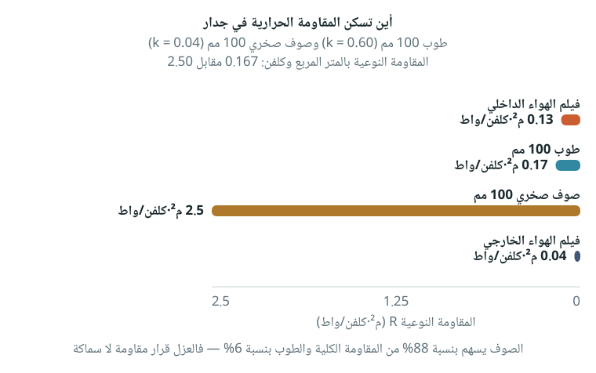

المقاومة الحرارية
المقاومة الحرارية تقيس ما يعارض مرور الحرارة عبر طبقة: R = L/(k·A) بالكلفن لكل واط، والخاصية النوعية R″ = L/k بالمتر المربع وكلفن لكل واط. وهي التي تحدد أيّ طبقة تُحكم العزل وأيّها لا يغيّر شيئًا.
تسير الحرارة في الجدار كما يسير التيار في مقاومة: فرق الحرارة يقابل فرق الجهد، والتدفق يقابل التيار، فتصير المقاومة لفرق الحرارة على التدفق. جدار من طوب 100 مم (k = 0.60 واط/(م·كلفن)) وصوف صخري 100 مم (k = 0.04) يعطي مقاومتين 0.167 و2.50 م²·كلفن/واط؛ ومع فيلمي هواء 0.13 و0.04 تكون المقاومة الكلية 2.84، ومنه U = 0.353 واط/(م²·كلفن). عند فرق 20 كلفن يمر تدفق 7.1 واط/م²، والصوف وحده يحجب 88% منه. هذا هو سبب أن مضاعفة سماكة الطوب لا تصلح جدارًا، بينما 20 مم صوفًا إضافية تُحسّنه بوضوح.
كيف تعمل الظاهرة؟
الحرارة تنتقل في المادة الصلبة بحركة الإلكترونات الحرة في المعادن واهتزاز الشبكة في العوازل، فتُقاوم بمسار أطول (سماكة أكبر) وبموصلية أقل. وعلى سطح الجدار توجد مقاومة ثالثة لا تُرى: طبقة مائع ساكنة تُقاوم الحمل بقيمة تعتمد على سرعة الهواء ونعومة السطح. ويضاف إلى الطبقات الصلبة مقاومة التلامس بين طبقتي بناء غير متلاصقتين، وهي في الجدران الجاهزة قد تساوي مقاومة 20 مم عزل بسبب الفجوات الهوائية وعدم الاستواء.
العلاقة بالأرقام
R″ = L/k، وR الكلية = ΣR″ + مقاومتا السطح، وU = 1/R_الكلية. المثال: 0.167 + 2.50 + 0.13 + 0.04 = 2.84 م²·كلفن/واط ⇒ U = 0.353 واط/(م²·كلفن) ⇒ Φ = 0.353×20 = 7.1 واط/م². ولو استُبدل الصوف بخرسانة (k = 1.5) لكانت مقاومتها 0.067 وحدها، فتهبط المقاومة الكلية إلى نحو 0.42 ويقفز U إلى 2.4 واط/(م²·كلفن) — أي سبعة أضعاف التدفق.
مفاهيم متقاربة
المقاومة الحرارية ليست الموصلية: الموصلية خاصية للمادة (واط/(م·كلفن)) لا تتغيّر بسماكة الطبقة، والمقاومة خاصية للطبقة (كلفن/واط) وتتغيّر بسماكتها ومساحتها. وليست كذلك «قيمة العزل R-value» التي تُنشر في كتالوجات البناء لأنها مقاومة نوعية لكل وحدة مساحة (م²·كلفن/واط) لا مقاومة كلية. ولا تُخلط بمعامل الانتقال السطحي h = 1/R″_سطح، وهو مقلوب مقاومة سطحية لا مقاومة طبقة.
حدود التطبيق
تنطبق على جريان مستقر أحادي البعد، فيسقط جمعها البسيط عند الجسور الحرارية (زوايا، مثبتات معدنية، إطارات نوافذ) حيث يمر التدفق في مسارات متوازية، ويُستعمل لها معامل التوصيل الخطي Ψ بدل R. وتفشل أيضًا عند التخزين الحراري: جدار يتغيّر بروده عبر اليوم يحتاج معاوقة حرارية تدمج السعة لا مقاومة ثابتة. وفي الإشعاع لا تُجمع المقاومات خطيًّا إلا بعد تخطيط معامل الإشعاع عند حرارة العمل، لأن h_r يتغيّر مع مكعب الحرارة المطلقة.

| الكمية | القيمة | المصدر |
|---|---|---|
| المقاومة النوعية لطوبة 100 مم بموصلية 0.60 واط/(م·كلفن) | 0.167 م²·كلفن/واط | [1] |
| المقاومة النوعية لصوف صخري 100 مم بموصلية 0.04 واط/(م·كلفن) | 2.50 م²·كلفن/واط | [2] |
| معامل الانتقال الكلي للجدار المركّب في المثال | 0.353 واط/(م²·كلفن) | [1] |
| التدفق الحراري عبر الجدار عند فرق 20 كلفن | 7.1 واط/م² | [1] |
المصادر
- 1 Thermal resistance — Wikipedia. en.wikipedia.org/wiki/Thermal_resistance · اطُّلع عليه 2026-11-19
- 2 Mineral Wool Insulation - Thermal Conductivity — The Engineering ToolBox. www.engineeringtoolbox.com/mineral-wool-insulation-k-values-d_820.html · اطُّلع عليه 2026-11-19
- 3 R-value (insulation) — Wikipedia. en.wikipedia.org/wiki/R-value_(insulation) · اطُّلع عليه 2026-11-19
استشهد بهذا المصطلح
الصيغتان مبنيتان من بيانات الصفحة نفسها: العنوان والتاريخ ورابط النسخة المنشورة.
المقاومة الحرارية. (2026). ديوان المعرفة — انفراد. https://infiradev.com/diwan/terms/thermal-resistance.html
@misc{thermal-resistance2026,
title = {المقاومة الحرارية},
howpublished = {{ديوان المعرفة — انفراد} — مرجع علمي عربي},
year = {2026},
url = {https://infiradev.com/diwan/terms/thermal-resistance.html},
urldate = {2026-11-19},
note = {مراجعة علمية: عبدالله الهويدي — مراجعة في تطبيق انفراد}
}
راجعه: عبدالله الهويدي — مراجعة في تطبيق انفراد · 2026-11-19 · آخر تحديث 2026-11-19